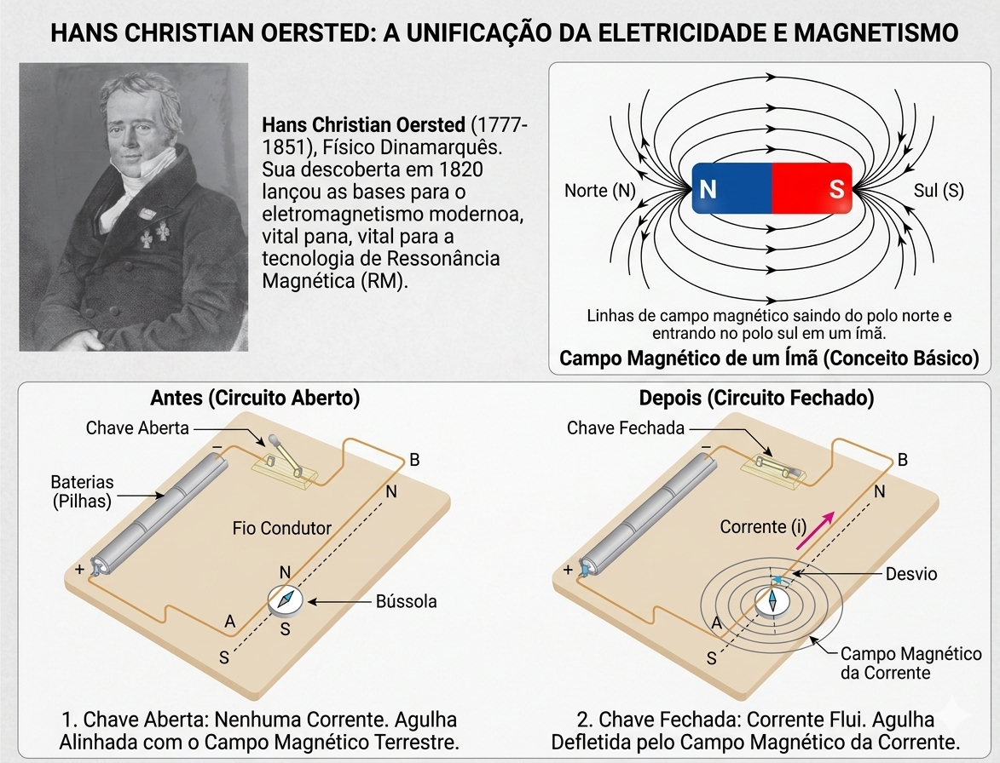

O Eletromagnetismo (Experimento de Oersted)
Até o início do século XIX, a eletricidade e o magnetismo eram estudados como fenômenos completamente independentes. Essa visão mudou radicalmente em 1820, graças ao físico dinamarquês Hans Christian Ørsted.
Durante uma aula experimental, Ørsted percebeu que a agulha magnética de uma bússola sofria uma deflexão sempre que era colocada próxima a um fio condutor percorrido por uma corrente elétrica. Quando a corrente era desligada, a agulha retornava à sua posição original, alinhada com o campo magnético terrestre.

Campo Magnético em um Fio Retilíneo Infinito
Quando uma corrente elétrica constante ($I$) percorre um fio condutor retilíneo e muito longo, as linhas de campo magnético geradas têm formato de circunferências concêntricas ao fio, situadas em planos perpendiculares a ele.
Para determinar o sentido dessas linhas de campo, utilizamos a Regra da Mão Direita:
- Polegar: Aponta no sentido da corrente elétrica ($I$).
- Demais dedos: Ao envolverem o condutor, indicam o sentido do vetor indução magnética ($\vec{B}$).

A intensidade do campo magnético ($B$) em um ponto localizado a uma distância ($r$) do fio é calculada pela Lei de Ampère:
- B: Módulo do campo magnético (em Tesla, T).
- $\mu_0$: Permeabilidade magnética do meio (no vácuo vale $4\pi \times 10^{-7} \text{ T}\cdot\text{m/A}$).
- I: Intensidade da corrente elétrica (em Ampères, A).
- r: Distância do ponto ao centro do fio (em metros, m).
Campo Magnético em uma Espira Circular
Se pegarmos o condutor retilíneo e o dobrarmos no formato de uma circunferência, criamos uma espira circular. Quando a corrente percorre essa espira, as linhas de campo continuam envolvendo o fio, mas se somam e se concentram fortemente em seu interior.
Para fins práticos, focamos na intensidade do campo magnético exatamente no centro geométrico da espira. A fórmula é muito parecida com a do fio, mas sem o fator $\pi$ no denominador:
Onde R é o raio da espira circular em metros (m).

Polos Magnéticos da Espira
Como o campo atravessa o plano da espira circular, um dos lados funciona como uma "saída" de linhas de campo e o outro como uma "entrada". Isso significa que uma espira percorrida por corrente atua exatamente como um ímã plano ou dipolo magnético.
Polo Norte (N)
Corrente flui no sentido anti-horário.
As linhas de campo estão saindo da face em sua direção.
Polo Sul (S)
Corrente flui no sentido horário.
As linhas de campo estão entrando na face.
Campo Magnético em um Solenoide
Um solenoide (também conhecido como bobina longa) é obtido quando enrolamos um fio condutor de forma helicoidal, gerando uma sequência contínua de várias espiras circulares paralelas.
Quando a corrente circula pelo solenoide, os campos de cada espira se combinam. O resultado é fascinante: no interior do solenoide, o campo magnético é praticamente uniforme (linhas retas e paralelas) e altamente concentrado.

- N: Número total de espiras do solenoide (voltas).
- L: Comprimento total do solenoide em metros (m).
O Eletroímã
O eletroímã é a união da bobina (solenoide) com a classificação magnética dos materiais. Ele consiste em um solenoide que possui, em seu interior, um núcleo feito de um material ferromagnético (como ferro doce ou aço).
Quando a corrente flui, o campo magnético gerado pelo solenoide magnetiza instantaneamente o núcleo de ferro, alinhando seus domínios magnéticos. Isso faz com que o campo magnético total seja multiplicado centenas de vezes!